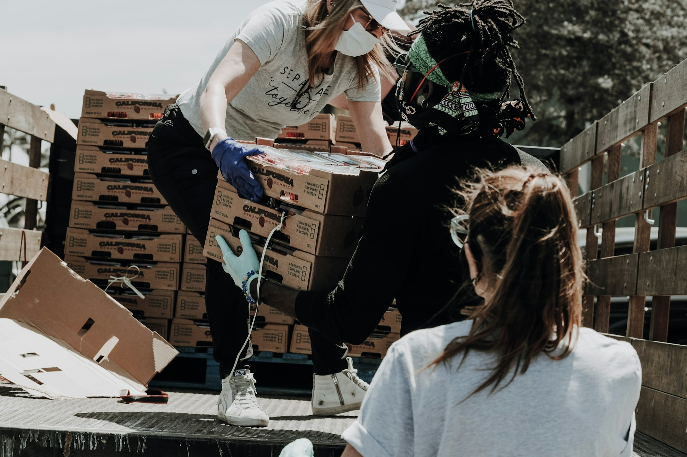

Donors post surplus
Hotels, restaurants and kitchens add the food type, quantity, pickup window and safe-until time.
Takes under a minute
Food Rescue Network
We connect surplus food from hotels, restaurants and kitchens with NGOs and food banks serving nearby communities — with biogas partners recovering food that can no longer be redistributed.
Live access-point data from the FoodBridge recipient directory.
Restaurants, hotels & kitchens with surplus food to share.
Post Surplus FoodOrganisations that collect and distribute food to communities.
Request FoodReceive donor surplus, manage safe reserves and share in-date stock with local demand.
Join as a Food BankReceive assigned recovery routes for food no longer suitable for people.
Join as a Biogas PartnerFind free, nutritious food and meal support near you.
Find Food Near MeOpen community food points and live surplus.
The map could not load. You can still browse open food points in the food finder.
Open food finderVerified NGOs and food banks serving people; biogas recovery facilities stay on the operations map.
About FoodBridge
Every day, edible food is thrown away while families nearby go hungry. FoodBridge connects donors with verified NGOs and food banks that can receive, store and redistribute safe food. Biogas partners provide a separate recovery route when food can no longer go to people.
Donors, NGOs, food banks and biogas partners are reviewed before their operational role is enabled.
Dietary needs, distance and safe-to-eat windows are checked together.
Recipients find food discreetly, with clear access and collection details.

“Good food belongs on plates, not in bins.”
The FoodBridge principleHow It Works
The network handles the coordination so donors can give quickly and community teams can focus on people, not paperwork.
Hotels, restaurants and kitchens add the food type, quantity, pickup window and safe-until time.
Takes under a minuteOur engine ranks nearby verified NGO and food-bank demand by food fit, urgency, capacity and route time. Unmatched edible food may be offered to a food bank; expired or unsafe food follows the biogas recovery path.
Safety & distance awareThe matched organisation confirms pickup, collects the food and records the handover for traceability.
Every handover countedLive Network Access
These figures come from the live recipient directory. They show where food can go today — completed-handover impact stays in the donor and network dashboards.
Get Involved
FoodBridge connects food donors, NGOs and community organisations, food banks, and biogas facilities to move surplus safely and recover what cannot be redistributed.
Turn excess into meals. Post a pickup, set a safe-until time, and let verified partners handle the rest.
Become a food donor For restaurants, hotels, caterers & kitchensNGOs and food banks register needs and capacity. Food banks can also hold and redistribute in-date inventory.
Register your organisation Verification keeps the network safe for everyoneReceive suitable donor surplus, confirm delivery, manage inventory and make in-date stock available to nearby demand.
Join as a food bank Food banks are verified co-partners and can both receive and supply foodRegister a facility to receive assigned recovery routes for food that is expired, unsafe or cannot be redistributed in time.
Join as a biogas partner Facility intake is recorded by the operatorContact
Questions about donating, partnering or using the network? Send a note and the FoodBridge team will get back to you.
Tell us what you would like to do and we will point you to the right portal or person.
We usually respond within one working day.